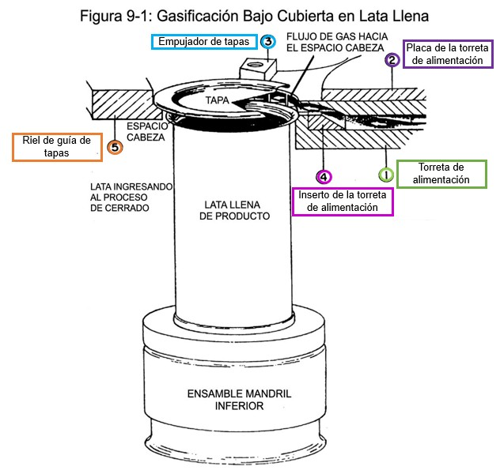

Guía de aprendizaje — Filtración, lubricación y gasificación
El aceite lubricante circula constantemente por la máquina y puede contaminarse con partículas y humedad. El sistema de filtración lo limpia antes de que llegue a los componentes internos.
Después de 6 meses de operación continua
Cuando el manómetro supera 90 psi (zona roja)
| Línea | Punto de lubricación |
|---|---|
| 1 | Torreta de costura — Anillo V |
| 2 | Carcasa de freno |
| 3 | Cojinete interior de cinta transportadora de descarga |
| 4 | Sello de la torreta de alimentación |
| 5 | Cojinete exterior de cinta transportadora de descarga |
| 6 | Sello de la torreta de descarga |
El sistema UCG reemplaza el aire dentro de la lata con CO₂ o N₂ antes de sellarla para conservar el producto y alargar su vida útil.
Diagrama oficial del manual — haz clic en cada botón para ver la descripción de cada componente.

En bebidas carbonatadas, el llenado genera espuma que atrapa aire. Los rompeburbujas lo eliminan antes del sellado.
Responde todas las preguntas y presiona "Ver resultado" al terminar.
1. ¿Cuándo hay que cambiar el filtro de eliminación de agua? Selecciona todas las correctas
2. ¿Para qué se utiliza el filtro de eliminación de agua?
3. ¿Dónde se ubica el filtro de línea?
4. ¿Cuál es el modelo y capacidad del filtro de línea?
5. ¿Qué hace exactamente el filtro de línea?
6. ¿Qué es la bolsa de elemento principal?
7. Ordena el flujo de aceite (arrastra para ordenar):
8. El filtro de línea y la bolsa principal trabajan…
9. Los filtros se reemplazan…
10. ¿Es necesario apagar la engargoladora para reemplazar los filtros?
11. ¿A cuántos puntos suministra el sistema de lubricación de grasa? Pregunta abierta
12. ¿Qué tipo de grasa usa el sistema automático?
13. ¿Cuánto dura aproximadamente una bomba de grasa completa?
14. ¿Qué pasa cuando una alarma de falta de grasa persiste más de 4 horas?
15. Ordena los componentes de la figura de gasificación según su número en el diagrama (del 1 al 5): Arrastra para ordenar